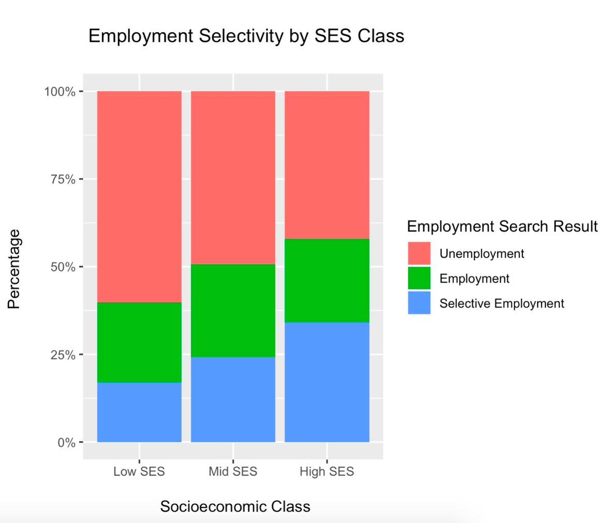

The concept of social and cultural capital mattering within corporate recruiting is common knowledge, but it's really hard to concretely point at.
The meritocratic American dream implies that “if you’re smart enough and if you work hard enough",
you can secure a better future for yourself in this country. Literature on this topic has largely focused on
underprivileged students securing positions in universities, but few studies look into socioeconomic mobility
from higher education into the elite class.
The employment rates of low socioeconomic status students in elite colleges who enter elite professions within finance, consulting, and tech may seem irrelevant to the vast majority of working class Americans. However, the entry level salary places these new graduates in the top 10 percentile of household income. This has key implications. Recently, researchers cite the top ten percent of the income distribution as disproportionately increasing its wealth and driving inequality. Furthermore, these entry level positions pave careers into powerful government and corporate positions. These professions are therefore considered a contemporary gateway into joining the U.S. economic elite.
This study looks at data collected at Dartmouth College (n = 395) to understand if the role of social capital, cultural capital, and human capital can explain the disparities in elite profession employment outcomes by socioeconomic class.
The employment rates of low socioeconomic status students in elite colleges who enter elite professions within finance, consulting, and tech may seem irrelevant to the vast majority of working class Americans. However, the entry level salary places these new graduates in the top 10 percentile of household income. This has key implications. Recently, researchers cite the top ten percent of the income distribution as disproportionately increasing its wealth and driving inequality. Furthermore, these entry level positions pave careers into powerful government and corporate positions. These professions are therefore considered a contemporary gateway into joining the U.S. economic elite.
This study looks at data collected at Dartmouth College (n = 395) to understand if the role of social capital, cultural capital, and human capital can explain the disparities in elite profession employment outcomes by socioeconomic class.
Students of lower socioeconomic status are less likely to be employed and selectively employed.
Are these differences significant?
Are these differences significant?

Employment data was collected throughout the late winter of respondent's senior year of college in this study. This results in
Employment data was collected throughout the late winter of respondent's senior year of college in this study. This results in
The role of social, cultural, and parent human capital
What we inherit from our upbringing and families
Previous researchers including Bourdieu, have defined social, cultural, and transferred human capital
Filler Text about Bourdieu's social reproductive theory and how that translates to how we measured social, cultural, and human capital.
WATCH VIDEO